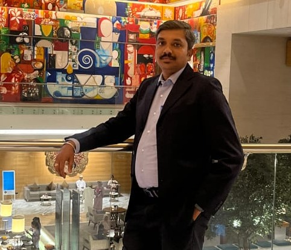

About Me
I am a technology professional with a strong interest in Artificial Intelligence, Cybersecurity, and Leadership. I enjoy learning how new technologies are changing the way organizations work and how people interact with technology.
Technology is growing very fast. Artificial Intelligence is changing many industries, and cyber threats are becoming more common and complex. Because of this, it is important for professionals and individuals to stay informed, understand risks, and continue learning.
Through this platform, I share simple explanations, insights, and updates about technology. My goal is to help readers understand technology topics in a clear and practical way.
My Purpose
The purpose of this platform is to share knowledge and create awareness about technology. I believe technology should not be complicated to understand. When explained clearly, it can help people make better decisions in their work and daily life.
This blog shares thoughts on cybersecurity incidents, AI developments, technology trends, leadership ideas, and professional growth.
Core Focus Areas
-
Artificial Intelligence & Automation
Understanding how AI and automation are changing industries, jobs, and the future of technology. -
Cybersecurity & Security Awareness
Sharing knowledge about cyber attacks, vulnerabilities, and best practices to improve security awareness. -
Technology News & Insights
Explaining important technology updates and industry trends in a simple and practical way. -
Leadership & Communication
Sharing ideas about leadership, teamwork, communication, and decision-making in professional environments. -
Personality Development
Discussing mindset, personal growth, and skills that help professionals grow in their careers. -
Knowledge Sharing & Continuous Learning
Encouraging people to learn continuously and share knowledge to help others grow.
What You Will Find on This Blog
- Cybersecurity awareness and attack analysis
- Artificial Intelligence trends and insights
- Technology news and updates
- Leadership and professional development ideas
- Simple explanations of complex technology topics
My Belief
Get in Touch
If you are interested in technology discussions, cybersecurity awareness, AI developments, or leadership topics, feel free to connect and share ideas.
Learning never stops, and sharing knowledge helps everyone grow together.
